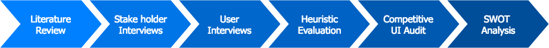

BigQuery - Product Analysis
Identify the oppurtunites for BigQuery
Project Details
Type of Work: Summer Internship
Team: 6 members
Role: User Experience Research Intern
Duration: 3 months
Skills Developed
- Cross-functional team collaboration
- Presentation and Communication of research findings
- Competitive Analysis
- Heuristic Evaluation
- SWOT Analysis
***This project is subject to a non-disclosure agreement.***
Overview
I got the opportunity to intern at Google, Seattle this summer in the BigQuery UX team. BigQuery is a serverless, highly-scalable, real-time analytics enterprise data warehouse built over Google Cloud Platform (GCP). As a user experience researcher, I had the opportunity to collaborate with multiple teams which included management, marketing, engineering, and User Experience to evaluate the product and its competitors with the goal of identifying opportunities for future product planning.
Research Process
During the internship, I evaluated three competitors of BigQuery to understand the competitive landscape. To ensure my findings were communicated well to the diverse audience and made a lasting impact, I fine-tuned the presentation of the results to cater to the needs of their roles. I ensured that the findings were visually represented to help designers gain clarity of the issues and focussed solely on the competitive UI audit to help the management team to drive the product strategy discussions. Ultimately, I was able to bring the teams on the same page and provide them with the required roadmap to improve the usability of the product.

- Literature Review : of existing market research (Forrester/Gartner articles), web articles, product comparisons and user reviews
- Stakeholder Interviews : Interviews/Meetings with Product Managers (PMs) and Domain experts (Engineers) to streamline the project and identify competitors
- User Interviews : of clients who previously used competitor products to understand the gaps in the product
- Heuristic Evaluation : used Microsoft Tenets & Traps methodology to identify usability issues with the Beta UI of BigQuery
- Competitive UI Audit : evaluated two competitors as an onboarding user and documented their unique features via screenshots, GIFs & videos for better interpretation of the findings
- SWOT Analysis : summarized the research findings by highlighting the strengths and weaknesses of BigQuery for future updates
Key Takeaways
- Learned how big organizations function and how UX research, design and engineering teams collaborate each quarter to deliver product releases
- Working with different stakeholder teams within Google, I understood the value of communicating results to a diverse audience
- At school, we tackle the problems from scratch but in the industry, a lot of previous research already exists and its all about learning where to look for the right information and building off of existing work. One of the challenges during my internship was to seek information from various sources (previous research and market research) and consolidate it for the rest of the team to improve their understanding of the competitive landscape
- Qualitative research is my biggest strength as a researcher, and this internship made me realize where I could improve (usability studies, quantitative analysis, surveys) to grow as a UX researcher
- Interactions with other Googlers was an eye-opening experience. Google was a place where fun and work go hand in hand. I learned to prioritize personal goals/individual growth